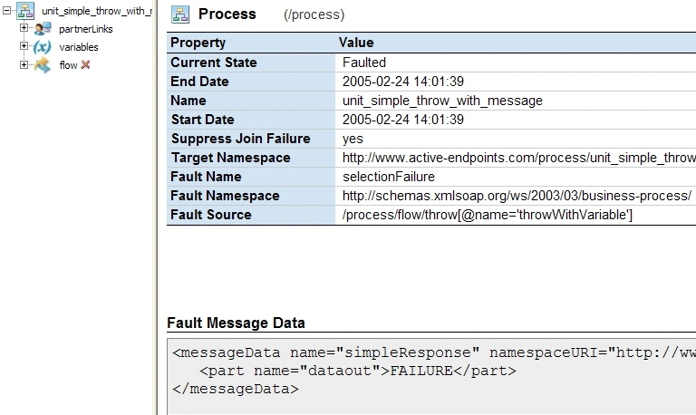

Inspecting Where and Why an Activity Faulted
In the Process Details window, the Outline view shows a list of process activities. A red X appears next to an activity that faulted.
You can select the process name to view details about the fault, as the following illustration shows.

Fault information includes:
|
Fault Name |
Standard BPEL or engine fault name |
|
Fault Namespace |
Standard BPEL or engine fault namespace |
|
Fault Source |
Process activity that threw the fault |
|
Fault Message Data |
Data in the throw or catch fault variable |
You can get further information about faults:
- Select the faulted activity to view the Fault Name. For details about BPEL faults, see BPEL Standard Faults in the ActiveBPEL Designer Online Help or in the WS-BPEL 2.0 specification. For engine faults see ActiveBPEL Custom Faults.
- Select View Process Log in the Outline view toolbar. The process log shows the execution path leading to the faulted activity.
Note: If the Process Log is not visible, you must enable logging on the Configuration page.
See also Using the Process Details Graphic View and Working with Variable Attachments.
Back to ActiveBPEL® Engine Administration Console Help
Copyright (c) 2004-2008 Active Endpoints, Inc.